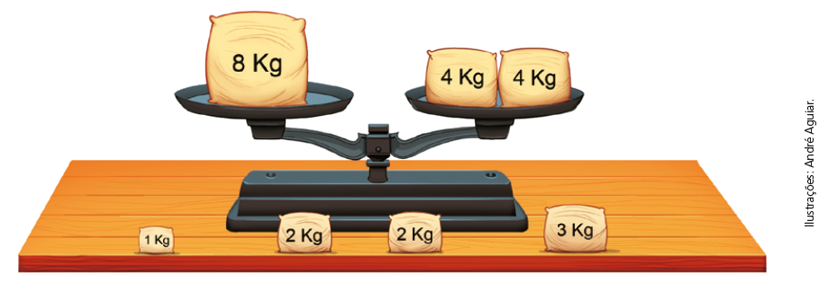
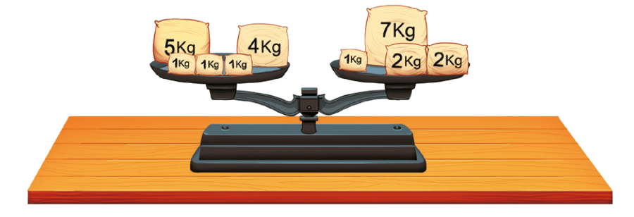
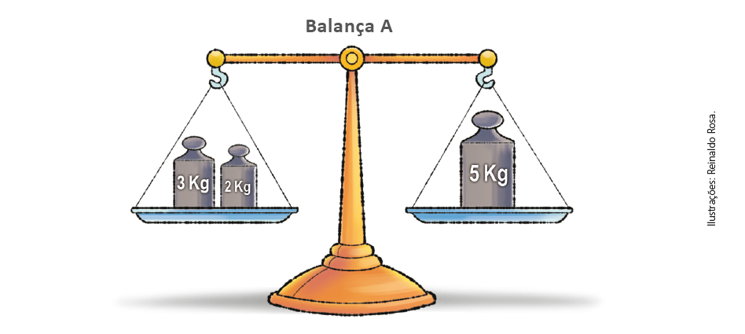
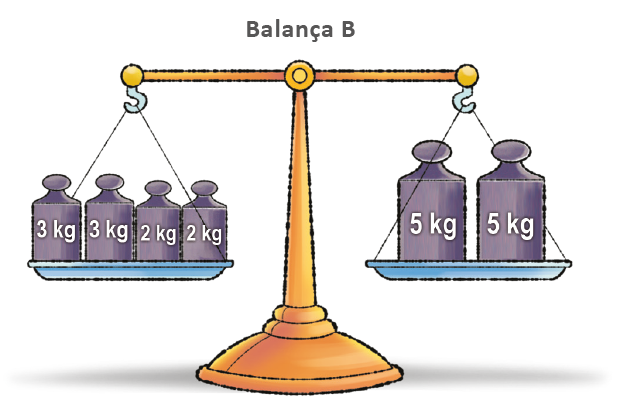
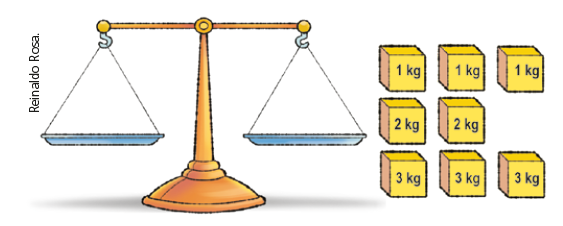

| Principais habilidades da BNCC | EF06MA14 |
|---|---|
| Competências | CG9, CE8 |
Neste capítulo abordaremos a igualdade, um conceito importante no campo da álgebra. De acordo com Walle (2009), o pensamento algébrico ou o raciocínio algébrico envolve formar generalizações a partir de experiências com números e operações, formalizar estas ideias com o uso de um sistema de símbolos significativos e explorar os conceitos de padrão e de função.
Walle em sua obra, Matemática no Ensino Fundamental: formação de professores e aplicação em sala de aula, nos traz a seguinte reflexão sobre o significado do sinal de igualdade (2009, p. 288):
O sinal de igualdade é um dos símbolos mais importantes na aritmética elementar, na álgebra e em toda a matemática ao usar números e operações. Ao mesmo tempo, pesquisas desde 1975 até o presente indicam claramente que o “=” é um símbolo muito mal compreendido.[...]
Certamente, os estudantes são informados no 1.º ano de que o sinal de igual significa “é o mesmo que” e é dito a eles que as expressões de cada lado devem ter o mesmo valor. Porém, as experiências dos estudantes os levam a acreditar que um lado do sinal de igual – normalmente o lado esquerdo – é o problema e o outro é a resposta. Sua compreensão do sinal [=] é próximo do significado da tecla da calculadora – é o que você tecla para obter a resposta. No formato escrito ele separa o problema da resposta
Por que é tão importante que os alunos compreendam corretamente o sinal de igualdade? Primeiro, é importante que eles percebam e compreendam as relações em nosso sistema numérico. O sinal de igualdade é um modo principal de representar essas relações. Por exemplo, 6 × 7 = 5 × 7 + 7. Nós não esperamos que os estudantes pensem sobre essas estratégias de fatos fundamentais nesses termos simbólicos. Porém, isso não é apenas uma estratégia de fatos fundamentais, mas também representa várias ideias básicas em aritmética. Um número pode ser expresso como uma soma: 6 = 1 + 5. A propriedade distributiva permite que multipliquemos cada uma das partes separadamente: (1 + 5) × 7 = (1 × 7) + (5 × 7). E propriedades numéricas adicionais convertem essa última expressão para 5 × 7 + 7. Quando essas ideias, inicial e informalmente desenvolvidas na aritmética, são generalizadas e expressas de modo simbólico, relações poderosas se tornam disponíveis para trabalhar com outros números de modo generalizado. Uma segunda razão é que quando os estudantes falham na compreensão do sinal de igual, eles em geral apresentam dificuldades ao lidar com expressões algébricas. Até resolver uma equação simples, tal qual 5x – 24 = 81, exige que os estudantes vejam ambos os lados do sinal de igualdade como expressões equivalentes.
CAPÍTULO 3 - Igualdade
A balança a seguir está em equilíbrio. No prato da esquerda, temos um pacote com 8 kg de farinha, e no prato da direita, dois pacotes com 4 kg cada um.
1. Troque ideias com um colega e respondam no caderno às questões a seguir.

a) Se Gabriel colocar mais pacotes de farinha em cada prato, dos pacotes que estão sobre a mesa, quais devem ser colocados em cada prato para que a balança continue em equilíbrio? Pode-se colocar um pacote de 2 kg em cada prato ou 2 pacotes de 2 kg em um prato e, 1 pacote de 1kg mais o de 3 kg no outro prato.
b) A situação da balança pode ser representada por uma sentença matemática expressa por uma igualdade: 8 = 4 + 4. Escreva a nova sentença matemática que representa a situação após vocês acrescentarem mais pacotes de farinha nos pratos. 8 + 2 = 4 + 4 + 2 ou 8 + 2 + 2 = 4 + 4 + 3 + 1
8 + 2 = 4 + 4 + 2
8 + 2 ⟶ 1.º membro
4 + 4 + 2 ⟶ 2.º membro
Ao adicionar um mesmo número aos dois membros de uma igualdade, encontramos uma nova igualdade.
A balança a seguir também está em equilíbrio.
UNIDADE 2 - CAPÍTULO 3
75
Por isso, nos exemplos utilizados para iniciar o estudo de igualdade recorremos a adição, subtração, multiplicação e divisão em situações-problemas para que os alunos percebam a equivalência. Caso tenha acesso a uma balança de dois pratos, é possível realizar as situações propostas de maneira prática.
Outra possibilidade é utilizar um cabide de metal e sacos plásticos que serão pendurados nas extremidades. Em cada um dos sacos é possível adicionar pesos ou outros objetos que possam mostrar a equivalência entre as massas.
75
2. Troque ideias com um colega e respondam às questões no caderno.
a) Gabriel quer retirar alguns pacotes de farinha de cada prato, porém, a balança precisa permanecer equilibrada. Quais pacotes ele pode retirar de cada lado? 2. a) Há várias possibilidades: deixar o pacote de 5 kg no prato da esquerda e os pacotes de 1kg, 2 kg e 2 kg na direita; deixar os pacotes de 5 kg e 4 kg no prato da esquerda e os de 7kg e um pacote de 2kg no prato da direita, entre outras.
b) Escrevam a sentença matemática que representa a situação mostrada na imagem. 5 + 4 + 1 + 1 + 1 = 7 + 1 + 2 + 2
c) Agora, escrevam a nova sentença matemática após Gabriel diminuir os pacotes em cada prato da balança.
Há várias sentenças matemáticas que podem ser escritas. Exemplo: 5 + 4 + 1 + 1 + 1 – 2 = 7 + 1 + 2 + 2 – 2.5 + 4 + 1 + 1 + 1 – 2 = 7 + 1 + 2 + 2 – 2
5 + 4 + 1 + 1 + 1 – 2 ⟶ 1.º membro
7 + 1 + 2 + 2 – 2 ⟶ 2.º membro
Ao subtrair um mesmo número aos dois membros de uma igualdade, encontramos uma nova igualdade.
Observe as balanças que estão em equilíbrio.
 UNIDADE 2 - CAPÍTULO 3
76
76
Nas atividades da seção “Encontre soluções”, retomamos os conceitos estudados neste capítulo. Em cada uma das atividades promova um momento de discussão para entender quais as estratégias usadas pelos alunos para resolver as situações propostas.
Nesse momento, também é possível que as atividades sejam resolvidas em duplas para potencializar as discussões. Este tipo de estratégia amplia o repertório dos alunos e possibilita novos conhecimentos quanto a estratégias e conclusões.
Atividade 1
Discuta com os alunos a importância do uso dos parênteses em determinadas situações. É importante que eles percebam que, conforme a posição dos parênteses, o resultado se altera.
3. Troque ideias com um colega e depois respondam às questões no caderno.
a) O que vocês observam de diferença entre as balanças A e B em relação aos pesos que estão em cada prato? 3. a) Na balança B, a massa em cada prato é o dobro em relação aos pratos da balança A.
b) Escrevam uma sentença matemática que represente a situação da balança A e da balança B. Balança A: 3 + 2 = 5; Balança B: 3 + 3 + 2 + 2 = 5 + 5.
c) Podemos dizer que a balança B pode ser representada pela sentença matemática (3 + 2) · 2 + = 5 · 2? Sim.
d) Podemos escrever a sentença matemática (3 + 3 + 2 + 2) : 2 = (5 + 5) : 2 para representar a situação da balança A? Sim.
Ao multiplicarmos ou dividirmos os dois membros de uma igualdade por um mesmo número, diferente de 0 (zero), encontramos uma nova igualdade.
ENCONTRE SOLUÇÕES
1. Copie as igualdades em seu caderno e coloque parênteses, quando for necessário, para torná-las verdadeiras.
a) 10 ∙ (4 + 36) : 2 = 200
b) 10 ∙ 4 + 36 : 2 = 58
c) (10 ∙ 4 +) 36 : 2 = 38
d) (24 + 18) : 3 – 10 = 4
e) 24 + 18 : 3 – 10 = 20
2. Mariana quer colocar todos os sólidos geométricos nos dois pratos da balança, de modo que a balança continue em equilíbrio.
a) Usando todos os sólidos, quais deverão ser colocados em cada prato para que Mariana consiga deixar a balança em equilíbrio? 1. a) Em um prato Mariana deverá colocar 2 sólidos de 1 kg cada e 2 sólidos de 3 kg. No outro prato, 1 sólido de 1 kg, 2 sólidos de 2 kg e 1 sólido de 3 kg.
b) Escreva a sentença matemática que representa a situação após Mariana colocar os sólidos geométricos nos pratos. 1 + 1 + 3 + 3 = 1 + 2 + 2 + 3
3. Nas sentenças matemáticas a seguir, descubra o número representado por uma letra.
a) 131 – a = 98 33
b) c + 564 = 871 307
c) 24 + m + 7 = 56 25
d) 44 – 10 + p = 89 55
4. Descubra o número nas igualdades:
a) 246 ÷ ■ = 82 3
b) ■ · 5 = 110 22
c) ■ ÷ 8 = 81 648
d) 43 · ■ = 516 12
UNIDADE 2 - CAPÍTULO 3
77
77